Conheça mais sobre a
PipeLine
Realize o monitoramento de suas tubulações de petróleo e diminua suas perdas e vazamentos.
DashBoard
Um ambiente para o monitoramento dos dados de cada estação.

Sensores
Responsáveis pela coleta dos dados de cada tubulação.
Eficiência de Tubulações
Com as estatísticas se pode observar a eficiência e possíveis gargalos.


Diminua os vazamentos e aumente seus lucros
Encontre a raiz do problema
Muitos medicamentos possuem componentes petroquímicos em sua composição.
Tome a decisão correta
Muitos medicamentos possuem componentes petroquímicos em sua composição.